| Champ | Valeur |
|---|---|
| Version | 1.1 |
| Date | Juillet 2026 |
| Auteurs | Amar HASNAOUI · Amine NAIT SIDHOUM |
| Stack principale | AWS · Snowflake · dbt · FastAPI · Streamlit · Kafka |
| Repository | github.com/AmarHasnaoui/Data_Enginnering_cloud |
NovaSight est une plateforme data end-to-end de type Smart City centralisant des données environnementales et de mobilité parisiennes. Elle implémente une architecture Médaillon (Bronze -> Silver -> Gold) sur AWS et Snowflake, avec exposition via une API REST sécurisée et un dashboard interactif.
Architecture complète : données publiques (data.gouv.fr, AIRPARIF) -> Lambda Extraction -> S3 Bronze -> Snowpipe -> Snowflake Bronze -> dbt (Silver) -> Snowpark (Gold) -> RDS PostgreSQL -> API Gateway -> Streamlit. Flux parallèle Vélib : EC2 Kafka Producer -> Kafka -> Consumer -> DynamoDB -> API Gateway.
| Couche | Format | Justification |
|---|---|---|
| Bronze S3 | CSV / JSON / GeoJSON brut | Fidélité maximale à la source, zone d'arrivage sans transformation |
| Bronze Snowflake | Tables typées VARCHAR / VARIANT | Requêtable en SQL dès l'ingestion, flexible pour sources hétérogènes |
| Silver Snowflake | Tables columnar Snowflake, normalisées et typées | Moteur OLAP, performance analytique, jointures géospatiales (ST_CONTAINS) |
| Gold S3 | Parquet (snappy) | Compression vs CSV, lecture columnar, support natif Snowflake et PyArrow |
| Gold RDS | PostgreSQL tables indexées | Moteur OLTP, latence < 10 ms pour l'API REST, UPSERT natif (ON CONFLICT) |
| Vélib temps réel | DynamoDB items | Faible latence lecture (<5 ms), pas de schéma fixe |
Comparatif Parquet vs alternatives :
| Critère | Parquet | Delta Lake | Iceberg |
|---|---|---|---|
| Compression | Excellente | Excellente | Excellente |
Support Snowflake COPY INTO |
Natif | Non | Non |
| Lecture | Via PyArrow | Via deltalake lib |
Via pyiceberg |
| Complexité opérationnelle | Faible | Moyenne | Moyenne |
| Décision | Retenu | Non Retenu | Non Retenu |
Micro-partitions & stockage columnar
Snowflake stocke toutes les données en micro-partitions : des blocs continus de 50 à 500 MB de données non compressées, automatiquement organisés en format columnar (chaque colonne stockée indépendamment). À l'exécution d'une requête, Snowflake ne lit que les colonnes référencées et élimine (prune) les micro-partitions dont les métadonnées (min/max par colonne) indiquent qu'elles ne contiennent pas les valeurs recherchées. Sur nos tables Silver (millions de mesures AIRPARIF + trafic), un filtre WHERE date_mesure = '2026-07-04' ne parcourt qu'une fraction des micro-partitions.
Source : docs.snowflake.com Micro-partitions & Data Clustering
Séparation stockage / calcul (architecture hybride)
Snowflake adopte une architecture hybride entre shared-disk et shared-nothing :
Concrètement : plusieurs Virtual Warehouses peuvent lire les mêmes données simultanément sans contention, et le stockage continue d'exister même quand aucun WH n'est actif (AUTO_SUSPEND). C'est ce qui permet d'optimiser les coûts : on ne paie le compute que pendant l'exécution réelle.
Virtual Warehouse calcul distribué élastique
Un Virtual Warehouse est un cluster de compute indépendant (1 WH = N nœuds selon la taille XS→6XL). Chaque WH est isolé : ses performances ne sont pas affectées par l'activité des autres. Dans notre projet, TRANSFORM_WH (XS, 1 crédit/heure) est utilisé pour dbt + Snowpark + Tasks, avec AUTO_SUSPEND = 60s pour éviter toute facturation hors exécution.
Result Cache
Snowflake met en cache le résultat de chaque requête pendant 24 heures. Si la même requête est ré-exécutée et que les données sous-jacentes n'ont pas changé, le résultat est retourné sans consommer de crédits WH. Utile pour les requêtes Snowsight répétitives sur les tables Silver.
Source : docs.snowflake.com Optimizing storage for performance
Snowpark Python calcul en place
Snowpark permet d'exécuter du spark directement dans Snowflake, sans extraire les données.
DynamoDB : NoSQL sub-milliseconde pour des données schemaless
L'API expose l'état des ~1500 stations Vélib en temps réel (simulation) : disponibilité des vélos, des docks, coordonnées GPS, statut de la station. Ce payload JSON peut évoluer (ajout de champs, types variables) sans préavis une table relationnelle avec schéma fixe serait un frein constant aux mises à jour de l'API.
DynamoDB répond à ce besoin avec propriétés clés :
station_id) est obligatoire ; tous les autres attributs sont libres, permettant l'ingestion du JSON tel quel sans ETL de mapping de colonnes.Source : docs.aws.amazon.com Big Data Analytics Options DynamoDB
Kafka sur EC2 : découplage producteur / consommateur
velib-realtime sans attendre la confirmation DynamoDB (simulation).Pourquoi EC2 auto-géré plutôt qu'AWS MSK ?
AWS propose Amazon MSK (Managed Streaming for Apache Kafka), un Kafka entièrement managé (provisioning, patching, haute disponibilité multi-AZ). MSK serait le choix naturel en environnement business : zéro gestion d'infrastructure, SLA garanti, intégration native.
Cependant, MSK n'est pas inclus dans le Free Tier AWS. Dans le cadre de ce projet réalisé sur un compte Free, nous avons choisi d'héberger Kafka directement sur une instance EC2 t3.micro (éligible Free Tier) : le broker Kafka et le consumer consumer_velib.py tournent sur la même instance. Cette approche implique de gérer manuellement l'installation, la configuration et la disponibilité du broker.
En environnement de production avec un compte AWS payant, la migration vers MSK serait immédiate.
Appliquer le génie logiciel à la data
Sans dbt, les transformations Silver sont des scripts SQL exécutés manuellement ou dans des tâches Snowflake sans versioning ni tests. dbt apporte les bonnes pratiques du génie logiciel à l'analytique :
| Pratique | Implémentation dbt |
|---|---|
| Versioning | Chaque modèle est un fichier .sql dans Git |
| Tests | not_null, unique, accepted_values, SQL custom |
| CI/CD | Les modèles sont déployés via GitHub Actions |
| Documentation | schema.yml auto-généré, consultable via dbt docs serve et dans snowflake |
| Modularité | Chaque modèle est un SELECT, réutilisable par ref() |
Source : docs.getdbt.com What is dbt?
Lineage DAG et traçabilité
dbt construit un DAG (Directed Acyclic Graph) de tous les modèles, de leurs dépendances jusqu'aux sources. Dans notre pipeline Silver, le DAG expose explicitement la chaîne stg_air_quality → int_air_quality_idf → zones sans avoir à lire le code SQL pour comprendre les dépendances. Cette traçabilité est notamment utile pour identifier l'impact amont d'un changement de schéma source (AIRPARIF, OpenData Paris).
Source : docs.getdbt.com Data lineage
Tests de qualité des données en Silver
Chaque modèle Silver est couvert par des tests déclaratifs dans schema.yml. Exemple sur la table stg_air_quality :
station_id : not_null + uniquevaleur : not_null (aucune mesure vide ne passe en Silver)polluant : accepted_values (NO2, PM10, PM2.5, O3, SO2)Un test en échec lors du dbt test bloque garantissant que les tables Gold (et l'API) ne reçoivent que des données conformes.
Intégration native Snowflake
L'adaptateur dbt-snowflake exécute les SELECT directement dans Snowflake via le Virtual Warehouse TRANSFORM_WH. Aucune extraction de données hors de Snowflake n'est nécessaire : dbt matérialise les résultats en tables ou vues dans le schéma Silver via CREATE TABLE AS SELECT.
L'alternative à Snowpipe serait un COPY INTO exécuté sur un Virtual Warehouse à intervalles réguliers. Ce pattern présente un problème fondamental : le WH est actif et facturé même si aucun fichier n'est arrivé en S3 depuis le dernier run.
Snowpipe résout ce problème en adoptant une ingestion pilotée par les événements :
Les fichiers sont chargés en quelques secondes après leur dépôt en S3, sans intervention humaine et sans coût fixe.
Source : docs.snowflake.com Snowpipe overview
python 3.11+
dbt-snowflake 1.7+
terraform 1.7+
aws-cli 2.x
psql 15+ # Pour appliquer le DDL Gold PostgreSQL
Configurer dans GitHub Secrets (CI/CD) et AWS Secrets Manager (runtime Lambda) :
# Snowflake
SNOWFLAKE_ACCOUNT=xxxxx.eu-west-1
SNOWFLAKE_USER=GITHUB_USER
SNOWFLAKE_PASSWORD=***
SNOWFLAKE_ROLE=TRANSFORM_ROLE
SNOWFLAKE_WAREHOUSE=TRANSFORM_WH
SNOWFLAKE_DATABASE=SILVER
# AWS
AWS_ACCOUNT_ID=123456789012
AWS_REGION=eu-west-1
S3_BUCKET=s3-projet-efrei
# RDS PostgreSQL (stocké dans Secrets Manager, jamais en dur)
RDS_HOST=xxx.rds.amazonaws.com
RDS_DATABASE=novasight
RDS_USER=admin
RDS_PASSWORD=***
RDS_PORT=5432
# Cognito
COGNITO_USER_POOL_ID=eu-west-1_xxxxx
COGNITO_CLIENT_ID=xxxxx
# API
API_BASE_URL=https://xxxxx.execute-api.eu-west-1.amazonaws.com/prod
Data_Enginnering_cloud/
│
├── .github/workflows/
│ ├── deploy_ddl.yml
│ ├── deploy_dbt.yml
│ ├── deploy_infra_snowflake.yml
│ ├── deploy_infra_aws.yml
│ ├── deploy_api.yml
│ └── deploy_gold_ddl.yml
│
├── Snowflake/
│ ├── DDL/
│ │ ├── R__0.0.0_grants.sql
│ │ ├── ....
│ │ └── R__5.0.0_create_export_gold_to_s3.sql
│ └── GOLD_DDL/
│ └── V1__create_gold_tables.sql
│
├── dbt_project/
│ ├── dbt_project.yml
│ ├── profiles.yml
│ ├── macros/generate_schema_name.sql
│ ├── models/
│ │ ├── air_quality/
│ │ │ ├── staging/
│ │ │ └── intermediate/
│ │ ├── mobilite/
│ │ │ ├── staging/
│ │ │ └── intermediate/
│ │ └── zones/
│ │ ├── staging/
│ │ └── intermediate/
│ └── tests/
│ ├── assert_no_future_dates.sql
│ └── assert_trafic_heures_within_day.sql
│
├── infra_snowflake/
│ ├── providers.tf
│ ├── variables.tf
│ ├── infra.tf
│ └── roles.tf
│
├── infra_aws/
│ ├── api/
│ │ ├── cloudformation/template/
│ │ └── code/
│ ├── dynamo/
│ │ └── cloudformation/template/
│ ├── ec2/
│ │ ├── cloudformation/template/
│ │ └── code/
│ ├── lambda_extraction/
│ │ ├── cloudformation/template/
│ │ └── code/
│ ├── lambda_rds_import/
│ │ ├── cloudformation/template/
│ │ └── code/
│ ├── rds/cloudformation/template/
│ ├── role/cloudformation/template/
│ ├── s3/cloudformation/template/
│ └── stepfunction/
│ ├── cloudformation/template/
│ └── code/
│
├── streamlit_app/
│ ├── app.py
│ ├── api_client.py
│ ├── auth.py
│ ├── colorscale.py
│ └── requirements.txt
│
├── docs/
│ ├── cahier_des_charges.md
│ └── documentation_technique.md
├── images/
│ ├── schema archi tech.png
│ ├── schema archi api.png
│ ├── schema deploy snow terraform.png
│ ├── schema deploy aws cloudformation.png
│ └── schma authentcongito.png
├── run_ddl.py
└── run_gold_ddl.py
Principe : Les données sont ingérées sans transformation, stockées telles quelles dans S3, puis chargées automatiquement dans Snowflake via Snowpipe.
Lambda Extraction (infra_aws/lambda_extraction/) :
s3://s3-projet-efrei/bronze/{source}/{year}/{month}/{day}/Snowpipe :
bronze/ via AWS SQSPartitionnement Bronze S3 :
s3://s3-projet-efrei/bronze/
├── air_quality/2026/05/31/FR_E2_2026-05-31.csv
├── stations/2026/06/08/stations_2026-06-08.json
├── velo_counts/2026/06/08/velo_20260608.json
├── zones_administratives/arrondissements.geojson
└── trafic_counts/2026/06/08/comptage_trafic_2026-06-08.json
Politique de rétention Bronze :
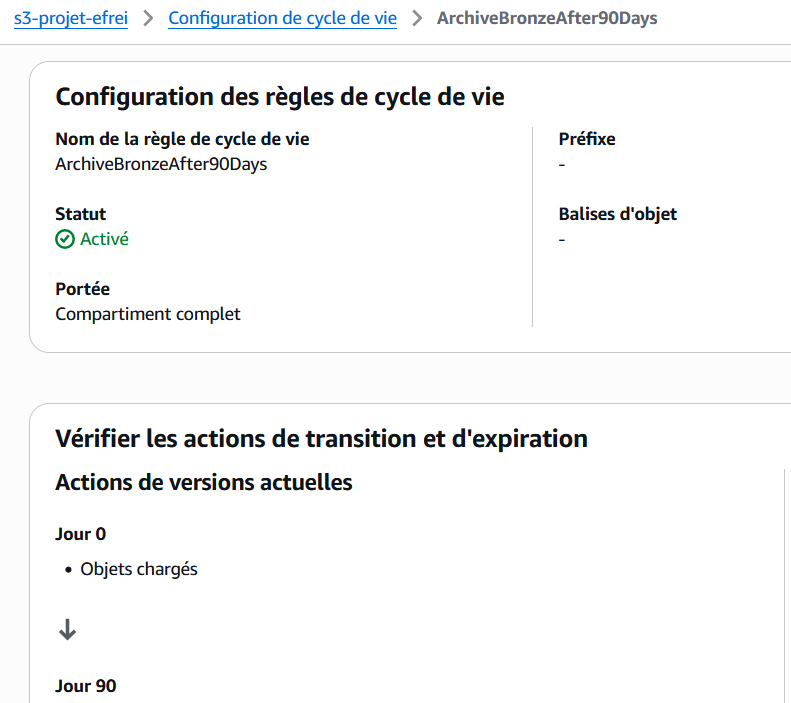
Stratégie d'ingestion :
| Stratégie | Approche retenue | Justification |
|---|---|---|
| Full load Bronze | Oui | Sources fournissent des snapshots journaliers complets |
| Incrémental Silver | Oui (dbt incremental) |
unique_key + stratégie incremental dbt |
| Delta Gold | Oui (watermark) | Table GOLD_WATERMARK filtre date > last_date |
Principe : dbt transforme les tables Bronze en tables Silver propres, typées et dédupliquées.
Structure des modèles dbt :
dbt_project/models/
├── air_quality/
│ ├── staging/ stg_air_quality.sql, stg_coordonnees.sql
│ └── intermediate/ int_air_quality_idf.sql
├── mobilite/
│ ├── staging/ stg_trafic_velo.sql, stg_trafic_routier.sql, stg_stations_velib.sql
│ └── intermediate/ int_velo_daily.sql, int_trafic_daily.sql
└── zones/
├── staging/ stg_arrondissements.sql
└── intermediate/ int_air_quality_zoned.sql, int_velo_zoned.sql, int_trafic_zoned.sql
Transformations appliquées :
| Transformation | Couche | Description |
|---|---|---|
| Typage | staging | Cast VARCHAR/VARIANT vers types natifs (DATE, FLOAT, INT) |
| Déduplication | intermediate | QUALIFY ROW_NUMBER() OVER (PARTITION BY pk ORDER BY ...) = 1 |
| Filtrage géographique | int_air_quality_idf |
Filtre IDF uniquement (lat/lon) |
| Jointure spatiale | int_*_zoned |
ST_CONTAINS(geometry, ST_MAKEPOINT(lon, lat)) |
| Agrégation journalière | int_air_quality_zoned |
AVG(valeur), MAX(valeur) GROUP BY date + site + polluant |
| Renommage | tous staging | Colonnes en snake_case, noms métier explicites |
Tests de qualité dbt automatisés (schema.yml + tests/) :
# schema.yml
tests:
- not_null # Clés primaires et colonnes critiques
- unique # Unicité des clés primaires
- accepted_values # Polluants : [NO2, PM10, PM2.5, O3, SO2]
# tests/assert_no_future_dates.sql
# -> date_mesure <= current_date()
# tests/assert_trafic_heures_within_day.sql
# -> nb_heures_bloque + fluide + dense + saturé <= 24
Principe : Une Stored Procedure Snowpark (spark sur snowflake) Python calcule les 7 datamarts Gold depuis les tables Silver tout en utilisant la puissance de snowflake avec un calcul distribué dans le warehouse, gère le delta via watermark, et exporte en Parquet vers S3.
Stored Procedure SP_EXPORT_GOLD_TO_S3 :
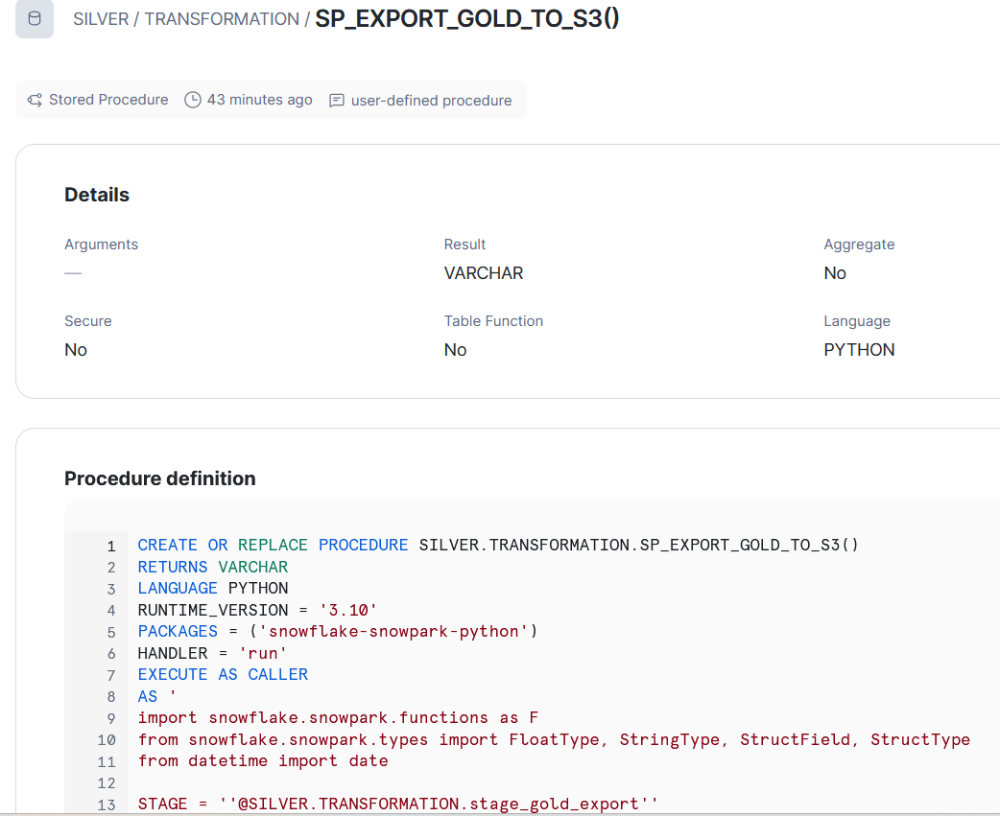
Table de watermark GOLD_WATERMARK :
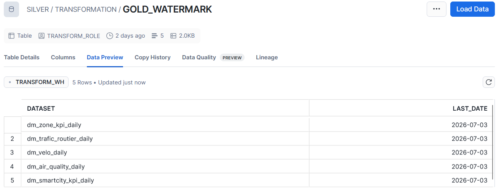
| Run | Comportement |
|---|---|
| Premier run (watermark = 1970-01-01) | Export complet de tout l'historique disponible |
| Runs suivants | Export uniquement des dates > last_date |
| Re-run le même jour | Pas de doublon (overwrite=True sur le fichier S3) |
| Échec Lambda RDS | Watermark non avancé -> données réexportées au run suivant |
Les 7 datamarts Gold exportés :
s3://s3-projet-efrei/gold_export/
├── dm_air_quality_daily/ 20260701.parquet
├── dm_alertes_pollution/ 20260701.parquet
├── dm_velo_daily/ 20260701.parquet
├── dm_trafic_routier_daily/ 20260701.parquet
├── dm_smartcity_kpi_daily/ 20260701.parquet
├── dm_zone_kpi_daily/ 20260701.parquet
└── ref_arrondissements/ 20260701.parquet
Principe : Le flux Vélib temps réel est simulé dans le cadre de notre projet data engineering cloud via un producer en utilisant l'api velib. Il utilise un pipeline séparé basé sur Kafka, indépendant du pipeline batch quotidien. Dans un context réel se sont des capteurs IOT qui envoient des données en temps réel mais nous ne pouvons pas reproduire cela.
API Vélib temps réel
-> EC2 Kafka Producer (producer_velib.py)
-> Apache Kafka (EC2 t3.micro, eu-west-1)
-> EC2 Kafka Consumer (consumer_velib.py)
-> DynamoDB (table stations_velib)
-> API Gateway -> Lambda FastAPI -> Streamlit
Pourquoi RDS PostgreSQL et pas Snowflake directement ?
Le pipeline analytique utilise Snowflake comme moteur OLAP (Online Analytical Processing) : il est optimisé pour des requêtes complexes sur de grands volumes (scans complets, agrégations, jointures multi-tables), avec une latence de l'ordre de la seconde. Ce moteur convient parfaitement aux traitements dbt et Snowpark qui s'exécutent une fois par jour.
L'API REST exposée au dashboard Streamlit a des contraintes radicalement différentes : chaque appel utilisateur doit retourner une réponse en < 50 ms. C'est le domaine de l'OLTP (Online Transactional Processing), optimisé pour des lectures indexées sur des volumes maîtrisés.
Les 7 datamarts Gold sont calculés une fois par jour dans Snowflake (Snowpark), exportés en Parquet vers S3, puis chargés dans RDS via UPSERT. L'API interroge uniquement RDS Snowflake n'est jamais sollicité en temps réel.
Principe : Chaque Parquet déposé dans S3 Gold déclenche automatiquement une Lambda via EventBridge "Put Event" qui charge les données dans RDS via UPSERT idempotent.
Flux :
S3 PUT gold_export/dm_air_quality_daily/20260701.parquet
-> EventBridge Rule (object created)
-> Lambda RDS Import
-> RDS PostgreSQL dm_air_quality_daily

Flux d'authentification Cognito (diagramme de séquence) :

FastAPI (infra_aws/api/code/main.py) déployée sur Lambda + Mangum (adapter ASGI) :
| Endpoint | Source |
|---|---|
GET /air-quality |
RDS dm_air_quality_daily |
GET /air-quality/alertes |
RDS dm_alertes_pollution |
GET /mobilite/trafic/daily-avg |
RDS dm_trafic_routier_daily |
GET /mobilite/velo |
RDS dm_velo_daily |
GET /mobilite/velib |
DynamoDB |
GET /kpi/summary |
RDS dm_smartcity_kpi_daily |
GET /zones/kpi |
RDS dm_zone_kpi_daily |
GET /zones/arrondissements |
RDS ref_arrondissements |
1. Infrastructure Snowflake (Terraform : warehouses, rôles, stages)
2. DDL Snowflake (schémas, tables, Snowpipe, Tasks, SP Snowpark)
3. Infrastructure AWS (CloudFormation : S3, RDS, Lambda, EC2, DynamoDB, Cognito, API Gateway, SNS, KMS)
4. dbt (modèles Silver : staging + intermediate + zones)
5. DDL Gold PostgreSQL (V1__create_gold_tables.sql sur RDS)
6. Lambda API FastAPI (packaging + deploy)
7. Streamlit Cloud (connexion GitHub + secrets)

# Déploiement Terraform
cd infra_snowflake
terraform init
terraform plan -var-file="variables.tf"
terraform apply -auto-approve
# Terraform crée : TRANSFORM_WH, SILVER database, roles (TRANSFORM_ROLE,
# DATA_ANALYST_ROLE, INGESTION_ROLE), stage S3 (Storage Integration)
# Ou via le script Python fourni
python run_ddl.py

# 1. Rôles IAM
aws cloudformation deploy \
--template-file infra_aws/role/cloudformation/template/role-projet-efrei.json \
--stack-name projet-efrei-iam --capabilities CAPABILITY_IAM
# 2. S3
aws cloudformation deploy \
--template-file infra_aws/s3/cloudformation/template/s3-projet-efrei.json \
--stack-name projet-efrei-s3
cd dbt_project
pip install snowflake-cli
snow dbt deploy
# via le script Python fourni
python run_gold_ddl.py
Data_Enginnering_cloud/streamlit_app/app.pyL'orchestration batch est assurée par Step Function et Snowflake Tasks chaînées. Aucun outil externe (Airflow, Prefect) n'est requis.
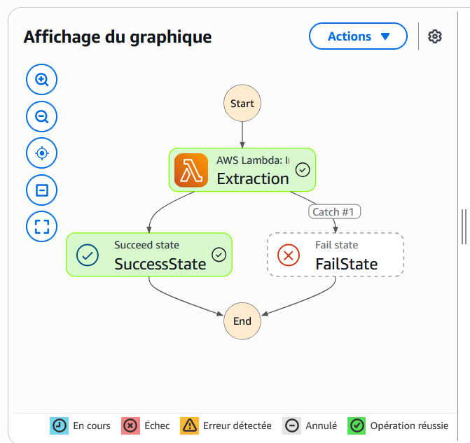
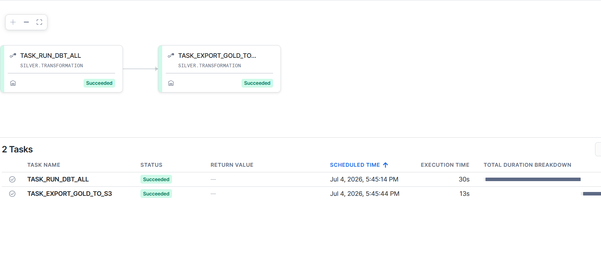
| Composant | Comportement en cas d'erreur |
|---|---|
| Snowflake Task | Retry automatique configurable mais pas fait |
SP_EXPORT_GOLD_TO_S3 |
Watermark non mis à jour si échec donc données réexportées au run suivant |
| Lambda RDS Import | Retry dès dépot des fichiers |
| Heure UTC | Action | Durée estimée |
|---|---|---|
| 07h00 | Lambda Extraction -> S3 Bronze | ~1 min |
| Automatique via SQS | Snowpipe -> Snowflake Bronze | ~1 min |
| 08h00 | TASK_RUN_DBT_ALL | ~1 min |
| Automatique avec dépendence Task 1 | TASK_EXPORT_GOLD_TO_S3 | ~1 min |
| Automatique via EventBridge | ~2 min |
Toutes les alertes convergent vers un seul topic SNS novasight-alerts qui envoie un email à l'équipe. Trois sources distinctes y publient :
Step Functions
Lambda RDS Import
Snowflake Task FAILED
| Ressource | Type | Actions |
|---|---|---|
SNS Subscription |
Envoi immédiat |
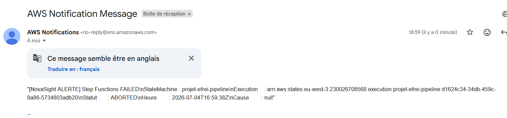
Des requêtes pour suivre les logs et à consulter dans Snowsight (Interface Snowflake) :
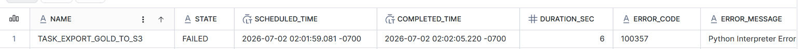
Les tasks Snowflake (TASK_RUN_DBT_ALL -> TASK_EXPORT_GOLD_TO_S3) publient sur le même topic SNS en cas d'échec via une Notification Integration
| Canal | Déclencheur |
|---|---|
| Email via SNS (EventBridge) | Step Functions FAILED / TIMED_OUT / ABORTED |
| Email via SNS (CloudWatch) | Lambda RDS Import erreur |
| Email via SNS (SF Notification) | Task Snowflake FAILED |
SLA cibles :
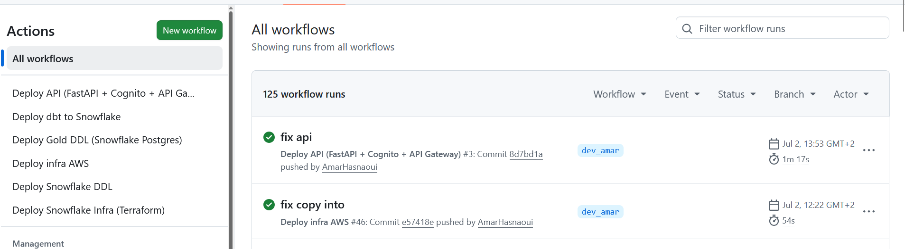
| Branche | Usage | Protection |
|---|---|---|
main |
Production | PR requise, tests dbt obligatoires, review peer |
dev_amar |
Développement Amar | Tests requis |
dev_amine |
Développement Amine | Tests requis |
feature/* |
Nouvelles fonctionnalités | Merge via PR uniquement |
Périmètre tarifaire :
- AWS : région
eu-west-3(Paris) tarifs on-demand officiels AWS Paris.- Snowflake : édition Business Critical sur AWS EU.
- Hypothèses snowflake : 1 pipeline batch/jour, 30 jours/mois, Warehouse XS actif ~5 min/jour donc 150min/mois
| Service | Usage dev | Coût dev |
|---|---|---|
| Snowflake Trial (Business Critical, WH XS) | 30 jours | $35 sur $400 crédits offerts |
| Service | Usage dev | Coût dev |
|---|---|---|
| AWS Trial | 6 mois | $7 sur $200 crédits offerts |
| Service | Usage mensuel | Calcul détaillé | Coût/mois |
|---|---|---|---|
| Snowflake Compute WH XS | 2,5 crédits | 5 min/j × 30 j = 2,5 crédits × $5,20/crédit | $13,00 |
| Snowflake Snowpipe serverless | 0,00411 crédit serverless | 0,00411 × $5,20 | $0,02 |
| Snowflake Stockage | 100 MO compressés | 0,0001 TB × 24 $/TB/mois | $0,0024 |
| Amazon RDS db.t3.micro | $36,24 | ||
| EC2 t3.micro (Kafka) | $16,992 | ||
| Amazon S3 | ~2 GB | $0,024/GB × 2 GB Standard | $0,048 |
| AWS Lambda (3 fonctions) | 15000 invocations/mois | < 1 M req + < 400 000 GB-s -> free tier permanent | $0,0130386 |
| Amazon API Gateway (REST) | 15000 requêtes | Premier palier 300M : $1,17/M | $1,17 |
| Amazon DynamoDB (on-demand) | $48,66 | ||
| AWS Step Functions | ~60 transitions | 4 000 transitions gratuites permanent | $0 |
| AWS KMS (3 clés CMK) | $0 | ||
| AWS Secrets Manager | 1 secret | 1 × $0,40 | $0,40 |
| EventBridge (S3 events Gold) | $0 | ||
| Amazon Cognito | < 50 000 MAU | Free tier permanent | $0 |
| Amazon SNS | < 100 000 MAU | 100000 email = $2 | $0 |
| TOTAL MENSUEL | ~$117 | ||
| TOTAL ANNUEL | ~$1404 |
| Optimisation | Économie estimée | Détail |
|---|---|---|
AUTO_SUSPEND = 60s Snowflake WH |
−40 % compute | ALTER WAREHOUSE TRANSFORM_WH SET AUTO_SUSPEND = 60 |
| Parquet snappy vs CSV | −75 % stockage S3 | Natif dans COPY INTO Snowflake (FILE_FORMAT = PARQUET) |
| S3 Lifecycle Rules Bronze | −60 % stockage Bronze | Glacier Instant après 90 j |
| RDS Reserved Instance 1 an | −20 % vs on-demand | ~$28,99/mois vs $36,24/mois (Paris eu-west-3) |
| EC2 Reserved Instance 1 an (Kafka) | −19 % vs on-demand | ~$13,76/mois vs $16,992/mois (Paris eu-west-3) |
| S3 Bucket Key KMS | −99 % appels KMS API | BucketKeyEnabled: true 1 clé de données par bucket au lieu de 1 par objet |
Implémenté :
alias/projet-efrei-s3, BucketKeyEnabled: true.StorageEncrypted: true + CMK alias/projet-efrei-rds (instance rds-projet-efrei).Clé AWS managée :
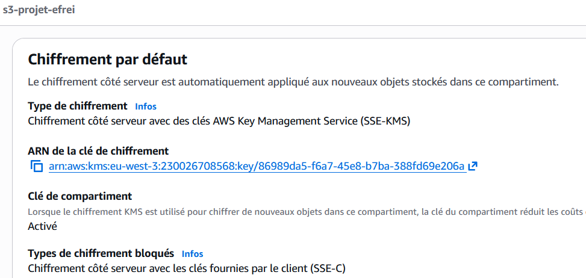
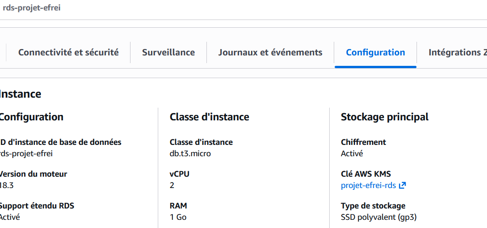
L'accès public au compartiment et objets est désactivé aux public
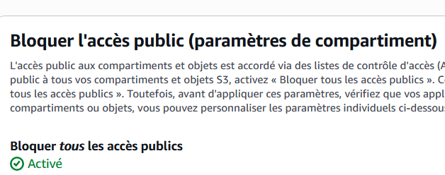
Chaque rôle est scopé au strict nécessaire : aucun wildcard * sur les ressources, chaque action est restreinte au service et au préfixe qu'il manipule réellement.
Les rôles Snowflake suivent le même principe : chaque rôle n'accède qu'aux schémas et objets nécessaires à sa fonction.
| Rôle Snowflake | Utilisé par | Périmètre |
|---|---|---|
TRANSFORM_ROLE |
dbt, Snowpark SP, Tasks | Lecture/écriture sur les schémas Silver et Bronze, exécution des Tasks et Stored Procedures, accès au Warehouse TRANSFORM_WH |
GITHUB_ROLE |
GitHub Actions CI/CD uniquement | Déploiement infra et DDL (CREATE/ALTER objets et INTEGRATION), pas d'accès aux données métier |
ANALYST_ROLE |
Data analysts, Snowsight | SELECT uniquement sur Silver, aucun accès Bronze brut, aucune écriture |
Principe appliqué : aucun rôle applicatif ou data n'a de droits
ACCOUNTADMINouSYSADMIN. Les opérations d'administration (création d'intégrations, gestion des objets) sont isolées dansGITHUB_ROLEpour le CI/CD
| Source | Champs | Catégorie RGPD | Niveau de risque | Action |
|---|---|---|---|---|
| Qualité de l'air (AIRPARIF) | code_site, valeur, polluant | Données publiques | Nul | Aucune |
| Trafic vélo | compteur_id, total_passages | Données agrégées | Nul | Aucune |
| Trafic routier | arc_id, libelle_arc, débit | Données de voirie | Nul | Aucune |
| Vélib temps réel | stationId, num_bikes_available | Données publiques | Nul | Aucune |
| Coordonnées GPS stations | latitude, longitude | Localisation infrastructures publiques | Faible | Maintenues en clair (public) |
| Utilisateurs dashboard | email (Cognito) | Donnée personnelle | Moyen | Géré par Cognito uniquement, hors pipeline data |
Les données traitées par le pipeline Bronze -> Gold sont entièrement publiques et anonymes. Le seul traitement de données personnelles concerne les comptes utilisateurs du dashboard, gérés exclusivement par Amazon Cognito.
| Traitement | Finalité | Base légale | Données | Rétention |
|---|---|---|---|---|
| Ingestion mesures air | Analyse environnementale académique | Intérêt légitime | Mesures publiques AIRPARIF | 90 j Bronze, illimité Silver |
| Comptage vélo/trafic | Analyse mobilité urbaine | Intérêt légitime | Comptages anonymes | 90 j Bronze, illimité Silver |
| Vélib temps réel | Information mobilité | Intérêt légitime | Disponibilité stations publiques | dernier état seulement |
| Authentification dashboard | Contrôle d'accès | Consentement | Email + mot de passe hashé (Cognito) + token | Durée du projet |
| Couche | Support | Rétention | Mécanisme |
|---|---|---|---|
| Bronze | S3 | 90 jours | S3 Lifecycle : Glacier après 90 j |
| Silver | Snowflake | Illimité | Conservation analytique |
| Gold | S3 | 90 jours (delta) | Lifecycle après 90 j |
| Gold | RDS PostgreSQL | Illimité | UPSERT (pas de doublons) |
| Vélib | DynamoDB | temps réel | dernier état seulement |